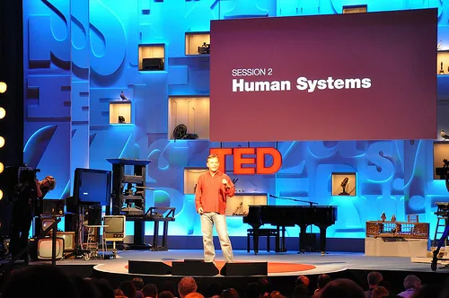

Blog · July 30, 2010
The TEDy Awards


Chris Anderson on the TEDGlobal 2010 stage. afromusing Flickr
The future is a beautiful progression when seen through the lens of TED. From cognitive neuroscience to middle eastern stand up comedy, the range of ideas worth spreading knows no bounds. Nor does the way we audience members choose to convey our interpretation of the conference to the rest of the world.
It is my humble opinion that no description does justice to such human immensity as experienced at TEDGlobal. How then to expresses the grandiose of thought.. Bright lights and a red (TED) carpet.
I give you The TEDys.
We start off with a bang. The triumvirate. Technology, Entertainment, and Design.
- TECHNOLOGY. Tan Le, Co-found of Emotiv‘s EPOC, a device that unfolds the cortical structure of the user’s brain to read what he or she is thinking. Watch the jaw dropping demonstration.
- ENTERTAINMENT. Maz Jobrani. This headliner in the former Axis of Evil Comedy Tour dazzles with jokes that unite the middle east with the rest of the world through the most connective medium of them all: laughter.
- DESIGN. John Hardy. Co-founder of Bali’s Green School, a soon to be off-the-grid holistic and sustainability education center featuring one of the world’s largest bamboo structures and one of only two hydro-vortex power turbines (that generates 8,000 watts of electricity daily). Our future is in the minds of our offspring.
- Runner Up. Eben Bayer. Co-inventor of Ecocradle and Greensulate: organic, compostable packaging and insulation, respectively, that is literally grown from agriwaste.
- Runner Up. Iain Hutchinson. Founder of Saving Faces with the Facial Surgery Research Foundation, an organization that furthers the bounds of facial research and restores underprivelaged patients’ sense of well being through reconstructive surgery. See the gallery here.
- BEST SCREENPLAY. David McCandless. Leave it to David to incite oohs and ahhs with the statistics of health supplements (below) or a breakdown of multi-billion dollar expenditures. Infographics are the wave of the future, making data not only more exciting, but easier to interpret by “combining the language of the eye with the language of the mind”.

- MOST INSPIRING / MS CONGENIALITY. Jessica Jackley. Founder of Kiva, the microlending powerhouse that to date has linked entrepreneuers with lenders to the amount of $150 million (on loans averaging $200 each). Check out Profounder, her newest venture. Jessica’s passion to help her fellow man is nothing short of legendary; visible through the tears she shed on stage under her fervent declaration that “life is beautiful.”
- PERSPECTIVE. Chris Anderson. Curator of TED. Chris spreads the idea of “crowd accelerated innovation.” The next global community is a matrix of teachers and students that is bounded only by its capacity to integrate great ideas into new discovery and creation. Interesting. See this post.
- RETHINK. Conrad Wolfram. Remember those math courses where calculators were banned? Conrad proposes an overhaul of mathematics, refining both the order and manner that schools impart information. Scrap tradition and re-frame the future.

- GREEN. Johan Rockstrom. Director of the Stockholm Resilience Centre, Johan informs and inspires us to make a difference in this crunch time for the climate. The next decade is an exciting and challenging opportunity for great minds to create the solutions that will shape the future of our world.
- GIANT. Stephen Berlin Johnson. An idea is an evolution. The “eureka” represents a process, a collaboration and influx of thoughts and inputs over time. “Chance favors the connected mind.” Cheers.
- BEST IN SHOW. Matt Ridley. Idea integration is the past and future of human accomplishment. Watch the immense talk here.
- HONORABLE MENTIONS.
- Tom Chatfield. Virtuality is Dazzling.
- Sheena Iyengar. Choice isn’t always the optimal option. Watch the TEDtalk here.
- Eric Berlow. Ordered networks encourage us to look at the nature of our questions.
- Sugata Mitra. Children function as self-teaching systems.
- Joseph Nye. Multi-polar global challenges are best surmounted with soft power.
CLASS FAVORITES (a bit of fun)
- Best Dressed. David Rowan. Editor of WIRED. Sunny Bates. Networker extraordinaire, social crème brulée.
- Visual Delight. Jamil Abu-Wardeh. Producer of middle eastern comedy, including Axis of Evil Tour. Elif Safak. Writer, global citizen. Watch her TEDtalk here.
- Stage Presence. Anne Lennox. Recording artist, social and political activist.
- Triple Latte Energy. Rives. Poet, host of TEDActive, energy bomb. June Cohen. Executive producer of TED Media, host of TEDUniversity, wit and smiles galore. Sunny Bates.
- Best Dancer. Peter Eigen. Founder, Transparency International. Exposer of international bribery and champion of anti-corruption; great at the Tango.

Who would you give a TEDy?
First published on my old blog, amyrobinson.wordpress.com, July 30, 2010.